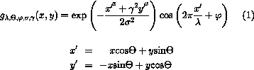
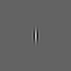
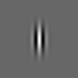
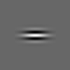
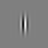
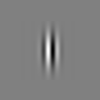
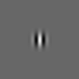
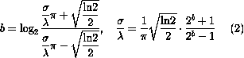
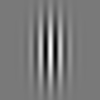
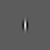

This page contains explanations concerning a simulation program available on internet.
On this site you can: visualize Gabor functions, use a Gabor filter for edge detection and extraction of texture features, simulate simple and complex cells (visual cortex), simulate non-classical receptive field inhibition or surround suppression and use it for object contour detection, and explain certain visual perception effects.

To visualize a Gabor function select the option "Gabor function" under "Output image". The Gabor function for the specified values of the parameters "wavelength", "orientation", "phase offset", "aspect ratio", and "bandwidth" will be calculated and displayed as an intensity map image in the output window. (Light and dark gray colors correspond to positive and negative function values, respectively.) The image in the output widow has the same size as the input image: select, for instance, input image octagon.jpg to get an output image of size 100 by 100. If lists of values are specified under "orientation(s)" and "phase offset(s)", only the first values in these lists will be used.
Two-dimensional Gabor functions were proposed by Daugman [1] to model the spatial summation properties (of the receptive fields) of simple cells in the visual cortex. They are widely used in image processing, computer vision, neuroscience and psychophysics. The parametrisaton used in Eq.(1) follows references [2-7] where further details can be found.
This is the wavelength of the cosine factor of the Gabor filter kernel and
herewith the preferred wavelength of this filter. Its value is specified in
pixels. Valid values are real numbers equal to or greater than 2. The value λ=2
should not be used in combination with phase offset φ=-90 or φ=90 because in
these cases the Gabor function is sampled in its zero crossings. In order to prevent the
occurence of undesired effects at the image borders, the wavelength value should
be smaller than one fifth of the input image size.
|  |  | The images (of size 100 x 100) on the left show Gabor filter kernels with values of the wavelength parameter of 5, 10 and 15, from left to right, respectively. The values of the other parameters are as follows: orientation 0, phase offset 0, aspect ratio 0.5, and bandwidth 1. |
This parameter specifies the orientation of the normal to the parallel stripes of a Gabor function. Its value is specified in degrees. Valid values are real numbers between 0 and 360.
|  | The images (of size 100 x 100) on the left show Gabor filter kernels with values of the orientation parameter of 0, 45 and 90, from left to right, respectively. The values of the other parameters are as follows: wavelength 10, phase offset 0, aspect ratio 0.5, and bandwidth 1. |
For one single convolution, enter one orientation value and set the value of
the last parameter in the block "number of orientations" to 1.
If "number of orientations" is set to an integer value N, N >= 1, then N
convolutions will be computed. The orientations of the corresponding Gabor
functions are equidistantly distributed between 0 and 360 degrees in increments
of 360/N, starting from the value specified under "orientation(s)".
An alternative way of computing multiple convolutions for different
orientations is to specify under "orientation(s)" a list of values separated by
commas (e.g. 0,45,110). In this case, the value of the parameter "number of
orientations" is ignored.
The phase offset φ in the argument of the cosine factor of the Gabor function is specified in degrees. Valid values are real numbers between -180 and 180. The values 0 and 180 correspond to center-symmetric 'center-on' and 'center-off' functions, respectively, while -90 and 90 correspond to anti-symmetric functions. All other cases correspond to asymmetric functions.
|  |  | The images (of size 100 x 100) on the left show Gabor filter kernels with values of the phase offset parameter of 0, 180, -90 and 90 dgerees, from left to right, respectively. The values of the other parameters are as follows: wavelength 10, orientation 0, aspect ratio 0.5, and bandwidth 1. |
If one single value is specified, one convolution per orientation will be
computed. If a list of values is given (e.g. 0,90 which is default), multiple
convolutions per orientation will be computed, one for each value in the phase
offset list.
This parameter, called more precisely the spatial aspect ratio, specifies the ellipticity of the support of the Gabor function. For γ = 1, the support is circular. For γ < 1 the support is elongated in orientation of the parallel stripes of the function. Default value is γ = 0.5.
|  | The images (of size 100 x 100) on the left show Gabor filter kernels with values of the aspect ratio parameter of 0.5 and 1, from left to right, respectively. The values of the other parameters are as follows: wavelength 10, orientation 0, phase offset 0, and bandwidth 1. |
The half-response spatial frequency bandwidth b (in octaves) of a Gabor filter is related to the ratio σ / λ, where σ and λ are the standard deviation of the Gaussian factor of the Gabor function and the preferred wavelength, respectively, as follows:

The value of σ cannot be specified directly. It can only be changed through the bandwidth b. The bandwidth value must be specified as a real positive number. Default is 1, in which case σ and λ are connected as follows: σ = 0.56 λ. The smaller the bandwidth, the larger σ, the support of the Gabor function and the number of visible parallel excitatory and inhibitory stripe zones.
|  |  | The images (of size 100 x 100) on the left show Gabor filter kernels with values of the bandwidth parameter of 0.5, 1, and 2, from left to right, respectively. The values of the other parameters are as follows: wavelength 10, orientation 0, phase offset 0, and aspect ratio 0.5. |
Default value is 1. If an integer value N, N >= 1, is specified then N convolutions will computed. The orientations of the corresponding Gabor functions are equidistantly distributed between 0 and 360 degrees, with increments of 360/N, starting from the value specified in "orientation(s)". For this option to work, one single value (without a comma present) must be specified for the parameter "orientation(s)".
If this option is enabled, all values in the convolution results below a certain threshold value will be set to zero (HWR is disabled by default).
The threshold value can be specified as a percentage of the maximum value in a given convolution result. If this percentage is set to 0, all negative values in that convolution result will be changed to 0.
Default is "no surround inhibition".
If "isotropic surround inhibition" is selected, edges in the surroundings of a given edge have a suppression effect on that edge. The relative orientation of these edges has no influence on the suppression effect.
If "anisotropic surround inhibition" is selected, the suppression effect of
edges surrounding a given edge depends on their relative orientation: edges
parallel to the considered edge have stronger suppression effect than oblique
edges, and orthogonal edges have no such effect.
Superposition for isotropic inhibition
If "isotropic inhibition" is selected, a superposition of the convolution
results for all used orientations is computed and deployed for surround
suppression. Different types of superposition can be used: L1, L2 and L-infinity
norms (see the explanations of these terms under "Superposition of phases" in
the "Gabor filtering" block).
This parameter controls the strength of surround suppression. Default is 1 but one may need larger values in order to completely suppress texture edges.
The surround that has a suppression effect on an edge in a given point has annular form with inner radius controlled by the combination of values of the parameters K1 and K2. The contribution of points in the annular surround is defined by a weighting function which is a half-wave rectified difference of Gaussian functions with standard deviations of K1σ and K2σ where σ is the standard deviation of the Gaussian factor of the Gabor function(s) used. One can visualize the weighting function by selecting option "inhibition kernel" under parameter "Output image".
The inner radius of the annular surround increases with K1. The size of the annual surround which has substantial contribution to the suppression increases with K2.
Default values are K1 = 1 and K2 = 4.
Thinning thins edges in the output to one-pixel wide edges by non-maxima suppression.
Hysteresis thresholding results in a binary output image. If it is enabled, two threshold values must be specified: T-high and T-low. These are given as fractions (between 0 and 1) of the maximum response value.
Pixels with responses higher than T-high are assigned the binary value 1 in the output, while pixels with responses below T-low are assigned the binary value 0. Pixels with responses between T-low and T-high are assigned the value 1 in the binary output if they can be connected to any pixel with a response larger than T-high through a chain of other pixels with responses larger than T-low.
| Last changed: 2008-07-03 |